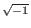
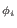
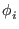
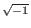
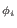
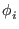
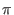

The matrix representing an arbitrary rotation operator is very simple.
It takes the form of a diagonal matrix with
Rij = 0 if
i  j, and
Rii = e. Here  is an
arbitrary real number, and from Euler's formula we know the diagonal
entries may be equivalently written as
cos +
j, and
Rii = e. Here  is an
arbitrary real number, and from Euler's formula we know the diagonal
entries may be equivalently written as
cos +  sin. [Grover96]
sin. [Grover96]
For the selective phase rotation we will need such a matrix which rotates only the phase of the marked state  radians. This will be diagonal matrix with all ones on the diagonal, except the k'th diagonal element will be -1 when the marked state is the k'th state. Obviously we can not construct anything like this operator classically, as to do so we would need to know the marked state in advance.
How such a gate would be implemented in quantum mechanical system is a little murky, I will leave it in Grover's own words:
``In a practical implementation this would involve one portion of the quantum system sensing the state and then deciding whether or not to rotate the phase. It would do it in a way so that no trace of the state of the system be left after this operation (so as to ensure that paths leading to the same final state were indistinguishable and could interfere). The implementation does not involve a classical measurement.'' [Grover96]
We shall take the existence of such a gate as a given for the remainder of the paper.